An AWS FinOps agent that finds cloud waste with evidence, and a worked example of building an LLM agent with spec, eval and guardrails. Staged: one change at a time, every step with its own report.
一个带证据找云上浪费的 AWS FinOps agent，同时也是一份用 spec、评估和护栏构建 LLM agent 的完整样例。过程即交付：每个改动都有 spec、按阶段的 commit、带证据的验收和一份 HTML 报告，下面按时间一步一步看。
动手写代码之前我问了自己这些问题，回答决定了它现在的样子。完整版见 README。
三张图都由仓库里的 mermaid 源文件生成（docs/diagrams/），点图可看大图。



每个改动一张卡：做了什么、收获了什么、报告与原始笔记。共 27 个改动（到 c0026-code-wrapup）；之后每个新改动验收时追加一行。
仓库骨架、需求、change-loop skill
收获面试只面一个东西：一个项目同时证明领域（FinOps）和 agent 工程
需求 v2 + AWS 只读 hook
收获第一行业务代码之前先装护栏：先写下它不能做什么
覆盖面矩阵 + 可见性链
收获先定成本目标需要的 SLI，再找指标，顺序不能反
从私有工作区蒸馏出项目规则层
收获蒸馏就是删：50 条公理留 11 条，每条写明在这里怎么落地
合成账号 + 假 AWS / Prometheus 服务器
收获测试数据难在浪费藏在哪，不在规模：只找闲置的检测器在 $8.7K/月里只找到不到 $100
采集 → 快照 → 检测器 → 可见性链 → 报告
收获确定性层命中 7/12；另外 5 条需要跨源判断，作为线索交出
对照标准答案的打分器、回归基线、Makefile、GitHub Actions；README 分两部分
收获评估抓到的第一批 bug 在打分器里：宽松匹配让召回虚高 8 个点
FinOps SLO、浪费预算、11 条告警规则（promtool 测试）、跨运行腐烂检测、巡检节奏
收获清理会腐烂：NAT 异常隔了 27 天才被发现，所以巡检必须每天跑
文档与报告界面改中文；语言规则更新；线索加结构化 since 字段；报告卡片显示资源 ID
收获逻辑不能依赖显示文本：一翻译，从文本里解析日期的代码就断了
判断层：LLM 逐条回答线索（代码取证并算数，模型只选候选，record/replay cassette），新增空闲时段线索，报告加「Agent 成本」
收获代码算数、模型只选：eval 深度 recall 0.44 → 1.0，且重录会改判断，稳定性来自 cassette 而不是模型
合成账号加 --world 与下个月场景（next_month / month_after 覆盖层），scripts/rot_demo.sh 三周期演示 resolved / regressed / new
收获两次运行不可能出现 regressed，至少要三个周期
findings 转可审阅的 dry-run 修复计划（撤回成本/回滚/前置检查），apply 永不执行
收获高撤回成本的动作连命令都不给全（承诺只有建议，孤儿快照只隔离）
新增 tools/sync_rules.py：对比母版与蒸馏公理，只出中文提议（更新/候选/回提），命中泄漏模式只标记不输出；manifest 只存文件名与哈希
收获同步只提议不落盘；基线取今天，只能保证今后的漂移
新增 CONTRIBUTING.md 与 docs/ARCHITECTURE.md：环境与测试、改动闭环、硬规则、加检测器与场景、eval 基线；模块地图与 8 个运行产物的字段契约
收获产物字段清单要对着一次真实运行逐 key 核对，不能凭读代码手写
测试账号 12 个发现、4 个陷阱、2 个场景的全部期望补齐 现状→期望→差异→处置→预防 五段，数字由成本模型计算；python3 -m testenv.catalog 生成自包含目录页
收获数字用占位符对着 world 计算，测试扫字面量金额，改价格页面自动跟着变
9 个注入变体的对抗套件（8 个发现集不变，1 个数字诱饵压掉一条 finding）；数字落地规则 G1-G8；样本外 recall 0.9/0.9091、savings_recall 0.566；实验记录 eval/EXPERIMENTS.md
收获样本内 1.0 是被调出来的：换两个月份 recall 掉到 0.9，原因是线索生成器而不是 LLM
每次运行写 plans.json（含判断层 finding）与 fivepart.json，报告每个 finding 卡片是 现状/期望/差异/处置/预防 五段，finding 带 owner；make rot-demo 与新套件进 make test
收获status/spec/diff 按 evidence 的 source 分流，LLM 文本不进数字；remediate 没有的类型在新模块注入处理器，测试断言 skipped 为空
LLM 只读业务目标文件推第 ① 环，对评审版打分；录制 v3 overlap 0.91 / precision 0.81，重采样均值约 0.79
收获overlap 高不等于缺口表等价：LLM 擅长推「要看什么」，不擅长猜「它叫什么」，② 环应按语义发现名字
用 Cost Explorer 核实 resolved finding 的真实节省：反事实基线 + 分层对照组 + 保持测量 + 精确账单分解，生成中文文档与 HTML
收获两张发票相减会得出「清理没效果」：三项清理省 $76.05，账单涨 $474.93
六张 mermaid 图（架构、数据流、可见性链、方法、腐烂、harness）+ 生成的导读页 reports/index.html + 链接/图新鲜度测试
收获给读者的层也要可生成、可测试：手写导读必然和仓库脱节
ring 1 只说词不写名，ring 2 按 HELP/name/scope 确定性发现候选名，ring 4 need 级混合状态；--samples N 评估
收获N=5 overlap 均值 0.964（min 0.91），评审路径 gaps 与 make eval 不变；尺子换了，不能和 c0017 的 0.79 直接比
给核实器喂真实偏差：期中删除、SP 吸收、用量增长、IOPS 吞吐口径差四类场景，按因分类，设计值对账；原链保留为零假设对照
收获100% 的验证结果最不值钱：场景链实现率 18.9%（仅 agent 85.9%），每个偏差都有独立证据
叙述里的未验证数字不再否决整条 waste finding：结构化字段合法时按从句脱敏并留痕，number_bait 的 $1,469 finding 保住；新增 3 个 bait 变体
收获校验器的 fail closed 本身是攻击面：不改 prompt、不放松 grounding，只改「谁有否决权」
窗口前就存在的费用异常用前 92 天 P25 基线出线索；消失的 finding 分 resolved / not_redetected；样本外 recall 0.9/0.9091 -> 1.0（已被污染）
收获漏检被记成修复比漏检本身更糟；对着样本外失败修完，那两个世界就不再是样本外
预注册的全新样本外世界（货运 SaaS，12 条标准答案/5 陷阱），冻结后只评估一次：recall 0.75、savings_recall 0.568、1 个陷阱违规
收获换一个世界 1.0 掉到 0.75，漏检在线索与取证而不在判断层；样本外要冻结在前才算数
文档合并：README 三层结果与嵌图、ARCHITECTURE 补判断层与处置、NARRATIVE、MATURITY、BUILD_PROCESS、覆盖面矩阵、实验记录对抗段、导读页重建
收获诚实的成绩单要把样本内 1.0 和预注册 0.75 放在同一张表里，并写明每一层证明什么
收尾代码尾巴（显式快照、未再检出入报告、make test 覆盖全部、heldout 默认端口）+ 文档检查 D11/D16（--docs 开关）
收获全局暂存和手写测试清单都是静默债；新检查先挂 flag 再切换
数字原样取自 eval/EXPERIMENTS.md §7.3。前三行是样本内或已被我用来修过 agent 的世界；只有最后一行是事先冻结、只评估一次的新世界。
| world | kind | recall | savings_recall | precision | savings_accuracy | deep recall | 陷阱违规 |
|---|---|---|---|---|---|---|---|
| base | 样本内 | 1.0 | 1.0 | 1.0 | 0.9167 | 1.0 | 0 |
| next_month | 样本外（已污染，c0023） | 1.0 | 1.0 | 1.0 | 0.8 | 1.0 | 0 |
| month_after | 样本外（已污染，c0023） | 1.0 | 1.0 | 1.0 | 1.0 | 1.0 | 0 |
| fresh_world | 预注册 | 0.75 | 0.568 | 1.0 | 0.5385 | 0.6667 | 1 |